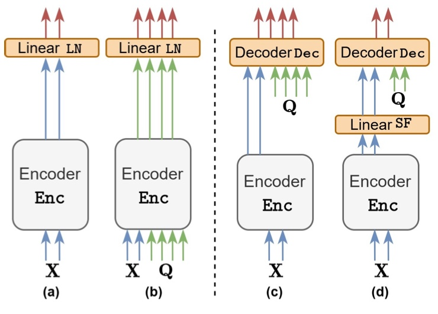

Decoding Text Spans for Efficient and Accurate Named-Entity Recognition
ACL 2026Annual Meeting of the Association for Computational Linguistics

In brief
SpanDec is a span-based named-entity recognition framework built for industrial deployment, where latency and throughput matter as much as accuracy. A lightweight decoder computes span-representation interactions only at the final transformer stage, and a filtering mechanism prunes unlikely candidates early — matching strong span-based baselines at a much better accuracy-efficiency trade-off.
Key takeaways
- Span-representation interactions can be computed at the final transformer stage via a lightweight dedicated decoder, avoiding redundant computation in earlier layers.
- A span filtering mechanism prunes unlikely candidates during enumeration, before expensive processing.
- Matches competitive span-based NER baselines while improving throughput and reducing computational cost.
- The accuracy-efficiency trade-off suits high-volume serving and on-device applications.
- Ablations show a single decoder layer is sufficient — deeper span decoders add computation without accuracy gains.
Abstract
Named Entity Recognition (NER) is a key component in industrial information extraction pipelines, where systems must satisfy strict latency and throughput constraints in addition to strong accuracy. State-of-the-art NER accuracy is often achieved by span-based frameworks, which construct span representations from token encodings and classify candidate spans. However, many span-based methods enumerate large numbers of candidates and process each candidate with marker-augmented inputs, substantially increasing inference cost and limiting scalability in large-scale deployments. In this work, we propose SpanDec, an efficient span-based NER framework that targets this bottleneck. Our main insight is that span representation interactions can be computed effectively at the final transformer stage, avoiding redundant computation in earlier layers via a lightweight decoder dedicated to span representations. We further introduce a span filtering mechanism during enumeration to prune unlikely candidates before expensive processing. Across multiple benchmarks, SpanDec matches competitive span-based baselines while improving throughput and reducing computational cost, yielding a better accuracy-efficiency trade-off suitable for high-volume serving and on-device applications.
BibTeX
@inproceedings{zhu_spandec,
title = {Decoding Text Spans for Efficient and Accurate {Named-Entity} Recognition},
author = {Maracani, Andrea and Ozkan, Savas and Zhu, Junyi and Mutlu, Sinan and Ozay, Mete},
year = {2026},
booktitle = {Annual Meeting of the Association for Computational Linguistics},
url = {https://arxiv.org/abs/2604.20447},
}